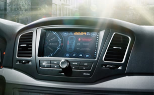

- 全新配备1.5T-峰效涡轮增压发动机
- ABS+EBD+CBC+BA多重安全防护
- 全新Flying-V酷黑双翼前格栅
- SRS 全功能六安全气囊
- Loetsch全息数字仪表
- 2650mm轴距超宽适后排空间
- 晶炫双五幅铝合金轮毂
- 29处实用储物设计
-
全新Flying-V酷黑双翼前格栅
全新350改款的前格栅采用黑色钢琴烤漆加镀铬镶嵌的形式，极大程度的提升了整车的品质感。增大的logo凸显了荣威品牌的识别性和重要性。
-
Extreme Silence超静谧座舱
引入Extreme Silence静音设计理念，运用风洞声学试验进行降噪优化分析，并在发动机总成上装备超静音正时链，同时在全车百余处位置采用降噪静音密封措施，营造出超宁静车内空间。
-

第三代inkaNet 3G智能行车系统
全新第3代的inkaNet，不但实现了车机屏、手机屏、电脑屏云端无缝互联，更全面升级软、硬件，实时动态导航、语音驾驶助理、让出行高效轻松，无限放大你的生活乐趣。
立体直瀑式格栅显露出经典的家族风格；
集成展翼式LED日间行车灯配备了全新晶钻氙气大灯。
新款昂科雷配备了别克的IntelliLink娱乐信息系统，通过中央的大尺寸液晶屏便可完成操作。
-
全新360度环抱一体式座舱设计
新昂科雷座舱整体延续了别克标志性的360度环抱一体式设计，造型全新设计，Ice Blue冰蓝氛围光带，令新昂科雷的座舱呈现出独具一格的视觉效果
-
3020mm超长轴距，成就同级最宽绰车内空间
同级车难以比肩的3020mm超长轴距，打造同级最宽绰车内空间，真正全尺寸七人座，体验近乎奢侈的头部、腿部空间。
-
高清数码触摸显屏
7英寸高清触摸式显屏色彩丰富、显示效果细腻且触控反应灵敏；作为车辆信息的集中显示终端除车辆基本信息的设置之外，还可以进行音源选择、收音机、USB外界设备等功能的操作。
-
全新造型17寸轮毂
全新7幅造型，优雅弧面勾勒出灵动气质。轮毂表层采用高级喷涂工艺，提升外观色泽和金属质感，旋压工艺的运用在保证更好强度的同时重量减少15%。
-
全新Waterfall立体直瀑式格栅
传承经典的别克家族式设计，融入新型双色电镀材质和横向片层结构，造型立体更富有层次感，呈现极具张力的视觉感受。
-
第三排6:4分离可倒座椅
第三排靠背可以按比例放倒，令您拥有优越灵活的储物空间，超大行李也能妥当安置，充分满足旅途中的多样化需求。
-
娱乐科技配置丰富
雪佛兰创酷TRAX的内饰以双拼配色为主基调，年轻动感、干练简洁，还透露出一丝变形金刚的锐气。触摸式集成中控台自下而上，向两侧延伸，犹如机器人舒张有力的肩臂。
-
直接连接苹果手机SIRI功能
而据了解，即将上市的雪佛兰创酷，则将成为国内大众类汽车品牌中，第一个可以直接连接苹果手机SIRI功能车型。用户可以用自然语言通过SIRI操控电话音响，应该对年轻人更具有吸引力。
-
大尺寸中控触摸液晶屏
7英寸高清触摸式显屏色彩丰富、显示效果细腻，且触控反应灵敏；作为车辆信息的集中显示终端，除车辆基本信息的设置之外，还可以进行音源选择、收音机、USB外界设备等功能的操作。
-
全新凯迪拉克CTS外观显得更加年轻
外观方面，全新凯迪拉克CTS显得更加年轻，同时也在向新XTS和ATS的最新家族式设计方向靠拢，水滴型的头灯、LED行车灯以及钻石切割的线条无一不体现出夸张、立体、动感的效果。
-
奢华而又不失科技感的内饰
全新一代CTS的内饰变化很大，整体呈现出一种奢华而又不失科技感的气质。中控台上硕大的液晶触摸屏与下方的功能性按键集合成为一个整体，十分亮眼，搭配上全新的仪表盘和CUE系统科技感十足。
-
近乎完美的50:50前后重量分配
全新凯迪拉克CTS运用了领先的轻量化科技，拥有近乎完美的50:50前后重量分配，高性能运动底盘搭配MRC主动电磁感应悬挂系统、Brembo高性能刹车系统以及高性能运动轮胎，带来赛道级的操控感受。
-
光导式效果的LED日间行车灯
全新一代Octavia明锐的“大眼”采用了立体造型镜面设计，通过增加光线反射能力，使大灯看上去更为晶莹剔透。精致的前大灯内部使用了光导式效果的LED日间行车灯，令整车更显豪华质感，科技感十足。
-
感应式触摸屏
全新一代Octavia明锐内饰将更加趋于年轻化，并且在造型上更加精致。不过，从曝光的细节图可以看出，新车配置了一块5.8寸接近感应式触摸屏，较现款车型有所增加。
-
全景天窗
车身线条方面，双腰线的设计继续得到保留，车顶和车尾的线条比较圆润。值得关注的是，此次即将上市的全新一代Octavia明锐也将会配置全景天窗。
-
纯正欧式掀背造型设计
作为一款独具特色的行旅车，无论是整体的造型设计还是细节处的打磨，昕动均流露出一种简约时尚的迷人气质。其中最引人注目的莫过于其时尚动感的掀背设计，长头短尾的车身姿态搭配纯正的欧式大掀背营造出一触即发的运动感。
-
极具时尚个性的色彩搭配
昕动共提供了包括奔放红、梦想蓝、明朗白在内的六种车身颜色。还提供了炫酷潮流的黑色套件，一体化设计的后窗玻璃、车顶、外后视镜等经过熏黑处理后赋予了昕动更强烈的视觉冲击力，尤受年轻消费者欢迎。
-
动力体验同样出色
昕动的动力体验同样出色。它搭载了大众汽车集团最新EA211系列1.4TSI涡轮增压发动机和1.6L自然进气发动机，匹配以高性能的7挡DSG双离合变速箱、6挡自动变速箱和5挡手动变速箱。
-
动感掀背外观
新车前脸与目前在售的宝骏630相同，宝骏610采用了掀背式设计，更显年轻与运动。为提升动感新车还装配有15英寸亮面铝合金轮毂，并采用了多层切削式设计。
-

双色搭配带来新鲜感
内饰方面，宝骏610采用了当下流行的上深下浅双色搭配，方向盘搭配银色装饰条，整体风格偏运动，带来不少新鲜感。此外，新车仪表盘也进行了全新搭配，采用双表盘设计，更符合当前年轻人取向。
-
1.5LP-TEC自然吸气发动机
动力方面，宝骏610搭载的1.5LP-TEC自然吸气发动机同样装备在宝骏630以及别克凯越上，成熟可靠是它的优势，同时该发动机具备DVVT(进排气双连续可变气门正时)系统。通过对进排气门同时调节，具有低转数大扭矩、高转数高功率的优异特性。
-
拥有“CROSS范”的MPV
宝骏730外观造型突破了传统MPV臃肿的感觉，整体呈流线型，极富现代感。车身侧面线条设计也非常流畅，配合黑色全车大包围的跨界风设计、使宝骏730拥有“CROSS范”。
-
颇为时髦的内饰
最近在一组设计草图中我们看到了多功能方向盘、定速巡航、8寸液晶大屏等颇为时髦配置，宝骏730的内饰整体以仪表台为中心，向车门延伸形成环抱状，让人联想到家里的大沙发，温和舒适。
-
两种动力选择，满足不同需求
动力方面，宝骏730将搭载1.5L发动机和一台全新的1.8L发动机。传动系统方面将配备手动变速箱，随后宝骏730还将推出配备自动变速箱的车型。
-

外观更添野性
五菱宏光S外观上最大的改动位于前脸上，上部进气格栅由单一宽幅横条贯穿，并附有镀铬装饰条蜂窝状的格栅，加上前后底部两快银色护板，令五菱宏光S更添一分野性，同时也提升了整车的视觉质感。
-
丰富功能
五菱宏光S配备了高度可调式三幅多功能方向盘电动外后视镜，以及可六向调节并具有腰部支撑的包裹式座椅，让驾驶者变得更加轻松。同时，可触摸7寸显示屏、可视倒车、蓝牙等功能也让人满意。
-
灵活多变的内部空间
灵活多变的内部空间也是五菱宏光S的一大亮点空间方面车身加长至4440mm，轴距依然为2720mm，第三排最放倒后，可获得更大的储物空间。五菱宏光S提供了5座、7座和8座可选。
-
空间布局是亮点
对一款MPV来说，空间和座椅的布局是相当重要的。G10在空间方面首创“空间魔盒内舱”设计，第二排和第三排座椅都可通过导轨调节间距，最大座位间距可达960mm。除了可布局三排7座外还能实现四排9座的座舱布局。
-
内饰尽展豪华大气风范
G10由意大利著名设计公司倾力打造，内饰全视野设计形成圆形剧院环抱式座舱感受，与天幕式超大全景观天窗等高端配置互为映衬，尽展豪华大气风范。
-
高性价比的丰富配置
作为一款中高端MPV，G10在配置上也是非常强度大，无钥匙进入、一键式启动系统、自动感应雨刮、AFS HID自动感应氙气大灯等高科技配置一应俱全。安全配置方面，尾部装配四点式泊车雷达和倒车影像等。